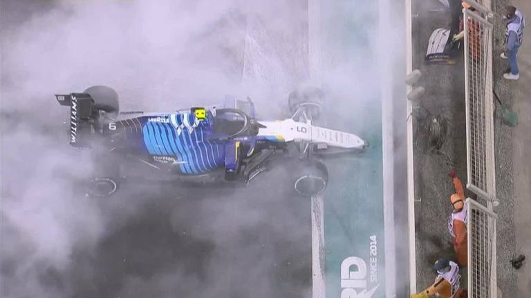

Abu Dhabi:
The Controversial Decider
The Score is Tied Up
If Lewis wins: He'll earn his 8th Championship, breaking the record and further cemmenting his legacy
If Max wins: He'll win his first Championship and be the second youngest to win a world championship
This race will decide it all
Points: 369.5
Points: 369.5
it's so close who knooooowwwsss what will happen!
It's last four laps of the race. Mercedes has a 10 second lead. It looks like it's going to be Hamilton's race.
Then boom the Williams' car crashes
This causes the safety car to come out.
- When the safety car is out, no passing is allowed.
- Additionally, the FiA decided that all the laps made with the safety car out counted
- Verstappen pit stops
- Hamilton does not because he would have lost his track position and Mercedes considered that the priority.
The FiA says that all lapped cars are not allowed to pass Hamilton, this means that Verstappen would need to pass all of them to win. And with 5 cars between then and with only one lap remaining, it seemed impossible to pass them all.
Red Bull Team Principle told the Race director
“We need one more lap.”

Why this call is unusual/controversial:
- He elected to restart the race at the end of that same lap, and not at the end of the following lap as the sporting regulations dictate.
- If he followed the rule book exactly, then the race would have ended with Hamilton crossing the finish line under the safety car. But that didn't happen. There is a clause that gives the Race Director the ability to overrule certain race rules which is the only reason this call still stands.
- This decision came after a "lobbying" call from Red Bull's team principle
Meanwhile, Hamilton is at a large disadvantage because he's on much older tires while Verstappen had fresh ones.
Mercedes tried to argue that this was against the rules, but to no avail.
The race restarted, with one lap left, and Mercedes could do nothing but watch and hope Hamilton can hold onto his lead.
It was a nail bitting final lap.

It was absolutely spectacular driving from both parties. And incredibly stressful. However, Hamilton was unable to defend and was passed on turn 5.
Despite all efforts, Hamilton simply could not pass Verstappen.

Thus, Verstappen became winning driver of the 2021 Formula 1 season
Max's Radio:
(With Red Bull Team Principle, Christian Horner)
"Oh, my God yes! Yes, yes! Oh, my God! Oh my God!"
"Max Verstappen. You are the world champion, the world champion!"
"Max. We are so proud of you."
"Oh, my God guys. I love you so much"
"You have driven like a champion all year. You deserve that. We needed a bit of luck. You got it. You made it happen. And we love you. We absolutely fucking love you."
"It is unbelievable guys. Can we do this for another 10, 15 years together?"
"Went down to the last lap, unbelievable."
Meanwhile... Mercedes' Reactions were less enthusiastic
"This is getting manipulated, man."
Hamilton [on car radio right after crossing the finish line]
Hamilton initally was angry, but still congradulated Verstappen on his hard fought win.
Despite the close competition and controversial rule calls in the final race, Hamilton and Verstappen have consistently stated that there is no ill will between them.
Meanwhile, Toto Wolff's reaction was less cool headed

Toto Wolff, Mercedes team principle, had a rather imfamous reaction to Verstappen's win.
(After smashing his headphones,) Toto imedietly called the Race Director, Michael Masi, to appeal the results:
“Mikey this isn't right... Mikey, no no Mike that was so not right! Mikey, what was that?! Michael raise control.”
“Go ahead Toto”
“You need to reinstate the lap before it’s not right.”
“Toto?”
“Yes?”
“It’s called a motor race, okay?"
“Sorry?”
“We went car racing”
And with that, Max Verstappen was recieved the 2021 Drivers Championship

This season of F1 was one of the closest in the sports history. With the incredible skill, fierce competition, and drama, it kept fans at the edge of their seats every weekend.
Today, Max Verstappen has gone on to dominate the sport. He's won the 2022 Drivers championship, and will most likely win the 2023 one as well. And this year, he's broken the record for most wins in a single season, most consecutive wins, the most points won in a single season, highest win percentage, the most fastest laps in a season, and more! He has gotten first place in every race this year, but 3. He's is the most dominate driver in the sport right now, and possibly ever.
While Max might've taken the crown of the Unbeatable Driver from Lewis Hamilton, only time will tell who will take it from him.